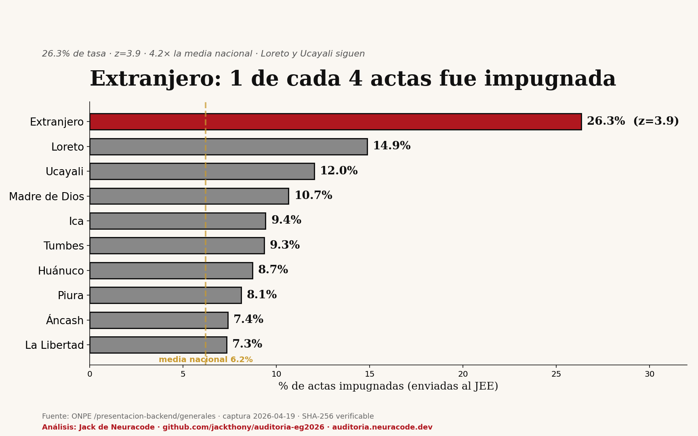

De las 2,543 actas del voto en el exterior, 670 fueron impugnadas (enviadas al JEE). Eso es 26.3%, cuatro veces la media nacional de 6.2%. Solo el extranjero y Loreto rompen la barrera estadística (z > 1.96).

| Región | Actas | Impugnadas | Tasa | z-score |
|---|---|---|---|---|
| Extranjero | 2,543 | 670 | 26.3% | +3.9 |
| Loreto | 2,697 | 401 | 14.9% | +1.6 |
| Ucayali | 1,564 | 188 | 12.0% | +1.0 |
| Madre de Dios | 507 | 54 | 10.7% | +0.7 |
| Ica | 2,443 | 230 | 9.4% | +0.4 |
| Región | Impugnadas | % del total nacional |
|---|---|---|
| Lima | 1,263 | 21.9% |
| Extranjero | 670 | 11.6% |
| Piura | 428 | 7.4% |
Total impugnadas: 5,763 actas · 1,711,270 electores en esas mesas · 125× más electores que el margen actual entre los dos primeros.
Si la impugnación fuera un problema rural/sierra, esperaríamos ver Puno, Apurímac, Cajamarca arriba. Están abajo:
El patrón no es rural vs urbano. Es urbano (Lima) + voto exterior.
Los datos crudos están publicados: